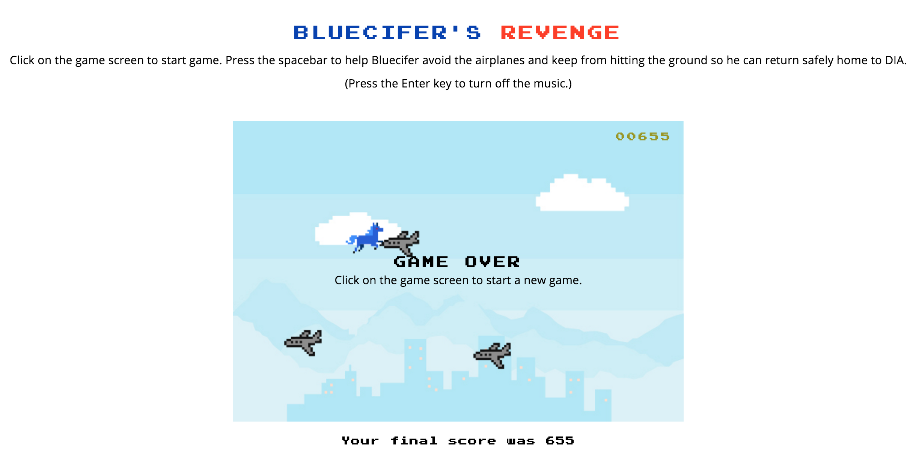

Posted on September 25, 2016.

My fellow students Gabi Procell and Lacey Knaff and I just finished Bluecifer's Revenge, a side-scrolling game where you must keep your avatar, the eponymous demonic horse from Denver International Airport (DIA), from hitting airplanes or falling to the ground as he flies (yes, flies) back home to DIA. The airplanes get faster as the score increases, and I also added an "Easter Egg" that the intrepid gamer might just encounter. You can find more details on the project readme.
This project involved a steep learning curve, as we were confronted with using Webpack, HTML5 Canvas, and JavaScript testing for the project, which were relatively novel to all of us. We also confronted the challenge of maintaining state in the program using object-oriented programming. In short, the game needed to know all of the objects on the screen and what they were doing at any given time. To meet these challenges, we first composed most of the game in one or two JS files, and then expanded them out into several, such as one to govern enemies (airplanes), one for the avatar Bluecifer, a quasi-omniscient game file, and the index.js, which was the one file to rule them all.